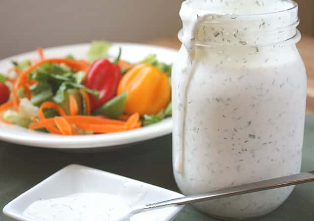

Ranch Dressing

Description
I am sure that everyone has had ranch dressing at one oint or another. If you have eaten alot of ranch you might have noticed that some are better than others, well today with this dressing you will be making the best so get exited. This is a slightly complicated recipe so if that scares you go and eat your store bought slop.
Ingrediants
- Mayonnaise: 1/2 cup
- Sour cream: 1/2 cup
- Buttermilk: 1/2 cup
- Dried dill weed: 1 teaspoon
- Dried parsley: 1/2 teaspoon
- Dried chives: 1/2 teaspoon
- Onion powder: 1/4 teaspoon
- Garlic powder: 1/2 teaspoon
- Fine sea salt: 1/4 teaspoon
- Finely cracked pepper: 1/8 teaspoon
- Lemon juice: 3 teaspoon
Steps
- Mix the beans and soup in a microwave-safe bowl and microwave until warm.
- Stir in half the cheese. Microwave until melted and well-blended.
- Transfer to a prepared baking dish. Top with fried onions and remaing cheese.
- Bake in oven preheated to 350 degrees F until cheese is melted and onions are brown.
- Enjoy